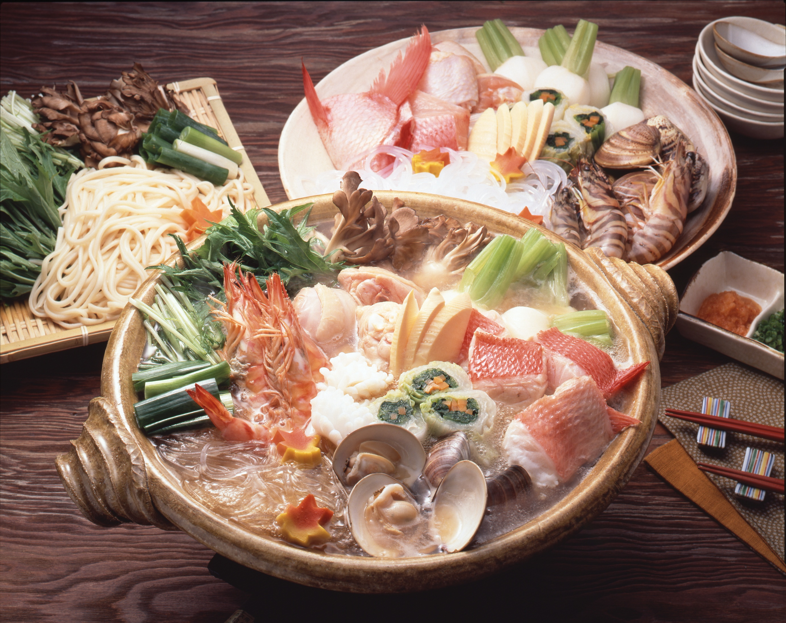
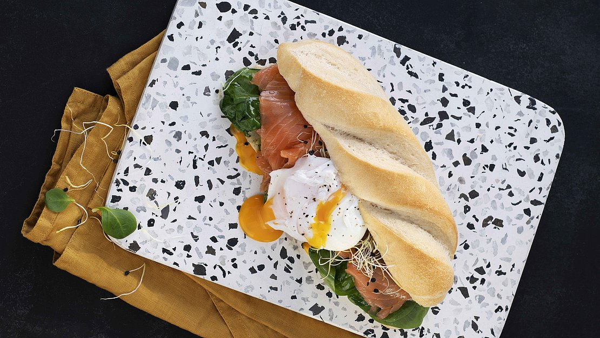

房內熱源與器具
- 廚房有三口 IH 系統爐，搭配房內大、小鍋和平底鍋。
- 另有 Panasonic 桌上 IH／Hot Plate 複合機，鍋物盤與平面盤共用同一底座。
- 還有炊飯器、微波爐、冰箱、電熱水壺與咖啡機。
- 刀、砧板、夾子、菜箸、湯勺、鍋鏟、瀝水籃、料理盆及完整餐具。
全程在 Villa 室內用餐。房內 Panasonic 桌上 IH 煮壽喜燒；廚房三口 IH 用第二只鍋煮清爽寄せ鍋，盛進個人碗後端到餐桌，另配雞蛋拌飯、泡菜與超市小菜。
14:00 離開 Safari → 15:15–16:00 MaxValu → 16:30 左右入住 → 18:00 開始晚餐。9/7 清里回程較長，保留成不用煮飯的彈性晚上。
Rakuten STAY是無人設施，官方禁止使用及攜入卡式爐等明火器具；雙鍋改由房內兩處IH分工。
預設 8 人，兩鍋是共享而不是各做 8 人份。壽喜燒以牛肉為主；寄せ鍋放雞肉、豬肉和少量海鮮，蔬菜可在兩鍋之間彈性分配。
牛肉 600g，邊煮邊吃。
雞、豬、魚貝煮熟後盛碗上桌；湯底先開 1 包。
白飯 4合；最後視食量再煮雜炊。


壽喜燒留在餐桌中央；寄せ鍋和炒菜都在廚房完成，盛碗後端到餐桌。
冷藏肉蛋，確認桌上 Panasonic IH、廚房三口 IH、兩只鍋、平底鍋與炊飯器。
預設 8 人先煮 4 合飯；食材分成兩鍋托盤，雞蛋、豬肉、雞肉與海鮮持續冷藏。
一口 IH 煮雞肉、白菜梗、紅蘿蔔、豆腐和菇類；另一口 IH 快炒高麗菜、豆芽和甜椒。
餐桌 IH 開壽喜燒；廚房寄せ鍋放豬肉、魚貝與葉菜，煮熟後盛碗上桌。
壽喜燒濃甜、寄せ鍋清爽，兩邊不要互倒湯汁；每鍋都準備獨立的生肉夾、熟食筷與湯勺。
9/7 吃新鮮法國麵包；9/8 趕著退房，改用保存性較好的小餐包。前一晚把蔬菜洗好，早上 15 分鐘能開吃。
法國麵包抹奶油乳酪，放煙燻鮭魚、薄洋蔥、小黃瓜與黑胡椒；旁邊配優格、水果和咖啡。
同一條麵包改夾火腿、片裝起司、生菜與番茄；孩子可把洋蔥拿掉。
平底鍋煎培根或火腿與蛋，夾進小餐包／可頌；搭優格 Granola 和牛奶。
只抓約一半人數。早上特別餓、孩子臨時不吃麵包，或晚上回房嘴饞時再開。
份量包含 9/7、9/8 兩個早晨；法國麵包先吃，小餐包留到第二天。

有小朋友一起吃，食材衛生與高溫鍋具動線比追求牛肉熟度重要。
兩鍋各自準備生肉夾與熟食筷。豬肉、雞肉及孩子要吃的肉，以中心 75°C、至少 1 分鐘為安全基準。
採買後直接入住，不把肉留在車上。生蛋若超過賞味期限、蛋殼破裂或曾離開冷藏太久，就改成全熟。
Rakuten STAY官方禁止使用及攜入卡式爐等火器。全程只用房內IH；寄せ鍋由大人在廚房盛碗，不讓孩子靠近熱鍋動線。
資料整理日期：2026/8/22。設備參考 Rakuten Travel 官方設備照片與客房器具表；依 Rakuten STAY官方FAQ，無人設施禁止使用及攜入卡式爐等火器。醬汁採用 Ebara すき焼のたれ マイルド；第二鍋採用 Mizkan 〆まで美味しい 寄せ鍋つゆ，以鰹、雞、昆布與帆立高湯搭配肉類海鮮，官方建議以雜炊收尾。小菜參考 Topvalu 國產白菜泡菜與即食茶碗蒸；食品安全參考日本農林水產省。寄せ鍋圖片：Mizkan；實際庫存以 MaxValu 現場為準。